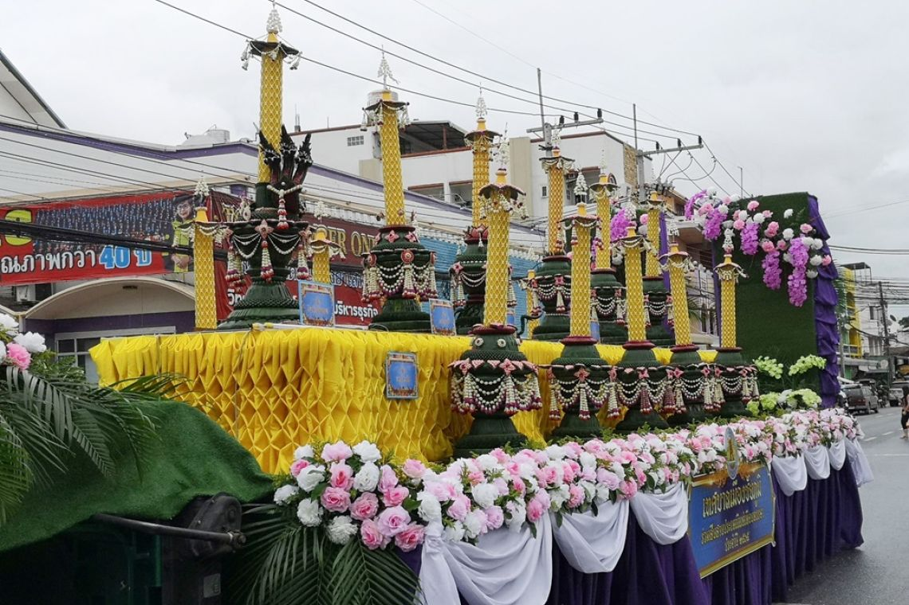
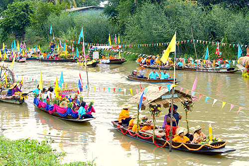

ประเพณีแห่งเทียนพรรษา
เนื่องจากสมัยก่อนพระภิกษุสงฆ์ไม่มีไฟฟ้าใช้ ชาวบ้านจึงหล่อเทียนต้นใหญ่ขึ้น
เพื่อถวายพระภิกษุสงฆ์จุดให้แสงสว่างในการปฏิบัติกิจวัตรต่างๆ เป็นพุทธบูชาตลอดเวลา 3 เดือน
การนำเทียนไปถวายชาวบ้านมักจัดขบวนแห่กันอย่างเอิกเกริกสนุกสนานและปฏิบัติสืบทอดกันมาจนกลายเป็นประเพณี
งานประเพณีแห่เทียนพรรษา
เป็นงานประเพณีที่รวมความผูกพันของชุมชนท้องถิ่น โดยเริ่มตั้งแต่การที่ชาวบ้านร่วมบริจาคเทียนเอามาหลอม
หล่อเป็นเทียนเล่มใหญ่เล่มเดียวกัน เป็นการแสดงออกถึงความสามัคคีกลมเกลียวในหมู่คณะไปในตัว การสรรหาภูมิปัญญาชาวบ้าน
ที่มีฝีมือทางช่าง มีความรู้ ความชำนาญในเรื่อง การทำลวดลายไทย การแกะสลักลวดลายลงบน ต้นเทียน การทำเทียนให้เป็นลายไทย
แล้วนำไปติดบนต้นเทียน การประดับด้วยผ้าฝ้าย ผ้าไหม ดอกไม้สด ล้วนแล้วแต่เป็นฝีมือของช่างในท้องถิ่น ส่วนการจัดขวนแห่ก็ล้วนแต่ใช้ของพื้นเมือง
เช่น เครื่องแต่งกายขอขบวนฟ้อน จะใช้ผ้าพื้นเมืองเป็นหลัก การฟ้อนรำจะใช้ท่ารำที่ดัดแปลงมาจาก วิถีชีวิต การทำมาหากินของชาวบ้าน เป็นท่ารำในรูปแบบของศิลปะที่งดงาม ดนตรีประกอบก็เป็น
เครื่องดนตรีประจำถิ่น ผสมเข้ากับการขับร้องที่สนุกสนานเร้าใจ ทำให้งานประเพณีนี้ยิ่งใหญ่ ประชาชนต่างเฝ้ารอคอย
ศิลปะการฟ้อนรำที่นิยมนำมาประกอบการแสดงในขบวนแห่ คือ การรำเซิ้งต่างๆ เช่น เซิ้งกระลอ เซิ้งกระติบ เซิ้งสวิง เซิ้งแหย่ไข่มดแดง
ซึ่งดัดแปลงมาจากการประกอบอาชีพในวิถีชีวิต ประจำวันทั้งสิ้น

งานแห่เทียนพรรษา
เป็นงานที่ทำให้คนวัยรุ่น หนุ่มสาว ได้มีโอกาสได้ใกล้ชิดและสัมผัส กับศิลปวัฒนธรรมอย่างใกล้ชิด นับตั้งแต่การเข้าเป็นอาสาสมัครช่วยเหลือ เป็นลูกมือช่างของทางวัด ในการแกะสลักทำลวดลายต้นเทียน
ค้นคว้าหาวิธีการทำเพียรพรรษาให้วิจิตรพิศดาร งดงาม แต่ประหยัดการเข้าร่วมในขบวนแห่จะเป็นการผสมผสานระหว่างคนรุ่นเก่ากับคนรุ่นใหม่ เช่น การเล่นดนตรีพื้นบ้าน โปงลาง หรือเป่าแคน จะมีทั้งผู้สูงอายุและคนหนุ่มสาว
ส่วนขบวนฟ้อนรำ จะใช้เด็กๆ รุ่นเยาว์ ถึงวัยหนุ่มสาวมากกว่าคนสูงวัย ซึ่งคาดหวังได้ว่า ประเพณีวัฒนธรรมท้องถิ่น จะสืบทอดต่อไปอีกยาวไกล
